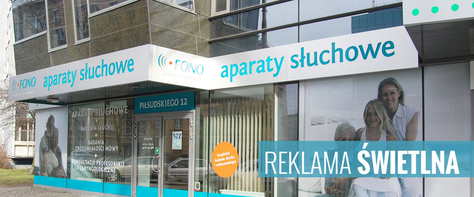
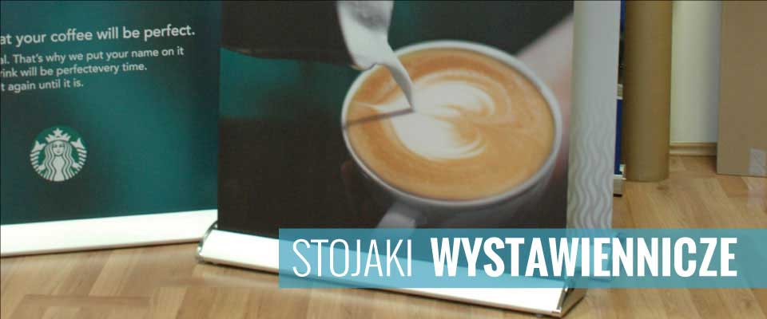
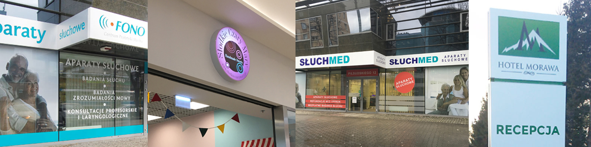

Reklama świetlna
Kasetony, pylony, litery blokowe
- 

- 
Kasetony reklamowe to jeden z najczęściej wybieranych nośników reklamy wizualnej. Ich estetyczny wygląd, wyrazistość i całodobowa widoczność sprawiają, że są efektywnym sposobem budowania rozpoznawalności marki. Jako producent instalprint.pl reklam świetlnych z Wrocławia oferujemy kasetony w różnych wariantach – frezowane, z licem napinanym, jedno- i dwustronne – z pełną obsługą: projekt, produkcja i montaż.
Kasetony świetlne to konstrukcje na ramie aluminiowej lub stalowej, wyposażone w lico z plexi, dibondu, tkaniny winylowej lub poliwęglanu, podświetlane energooszczędnymi modułami LED. To doskonały sposób na prezentację logo, nazwy firmy lub hasła reklamowego.
Zalety kasetonów reklamowych:
instalprint.pl z Wrocławia realizuje zamówienia dla firm z całego kraju – m.in. Warszawy, Krakowa, Poznania, Katowic, itp. Nasze kasetony można zobaczyć na fasadach sklepów, punktów usługowych, aptek, restauracji i wielu innych obiektów komercyjnych.
Rodzaje kasetonów w naszej ofercie:
Każdy kaseton przygotowujemy indywidualnie – dobieramy wymiary, typ lica, kolorystykę, rodzaj podświetlenia i montaż. Rozpoczynamy od konsultacji i wizualizacji, aby klient dokładnie wiedział, jak będzie wyglądała jego reklama świetlna. Używamy materiałów najwyższej jakości – plexi, dibond, aluminium, winyl – zapewniających trwałość i estetykę. Montaż wykonujemy w całej Polsce i Europie, dbając o bezpieczeństwo i profesjonalizm.
Litery przestrzenne 3D to elegancka forma reklamy zewnętrznej i wewnętrznej. Trójwymiarowa konstrukcja i podświetlenie LED sprawiają, że logo lub nazwa firmy stają się widoczne o każdej porze dnia i nocy. Jako producent instalprint.pl liter 3D z Wrocławia realizujemy projekty dla klientów w całej Polsce – od projektu po montaż.
instalprint.pl kompleksowo realizuje projekty liter przestrzennych – od wizualizacji i produkcji po transport i profesjonalny montaż. Współpracujemy z architektami, projektantami wnętrz i agencjami brandingowymi z foxmedia.com.pl, zapewniając pełne wsparcie techniczne.
Litery przestrzenne są odporne na wilgoć, promieniowanie UV i zmiany temperatur. Oferujemy serwis i konserwację liter podświetlanych i niepodświetlanych, aby reklama 3D pozostała efektowna przez lata.
Skontaktuj się z nami instalprint.pl, jeśli interesują Cię kasetony reklamowe, litery 3D LED lub pylony reklamowe. InstalPrint to producent reklam świetlnych z Wrocławia, oferujący kompleksowe rozwiązania dla firm z Dolnego Śląska i całej Polski – szybka realizacja, wysoka jakość i indywidualne podejście do klienta.

Copyright 2008-2024 by Instalprint | Wszystkie prawa zastrzeżone